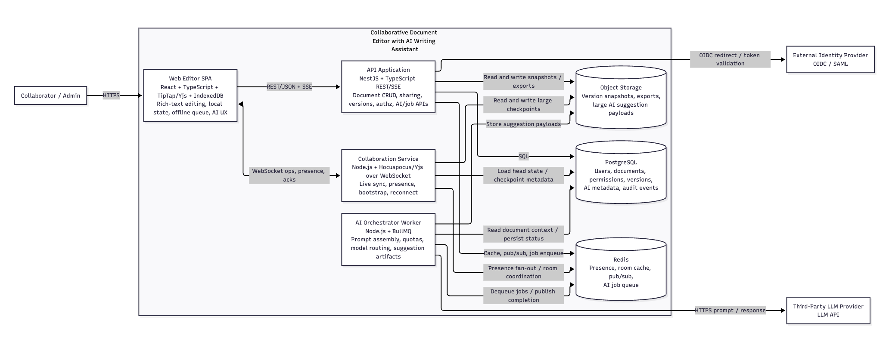
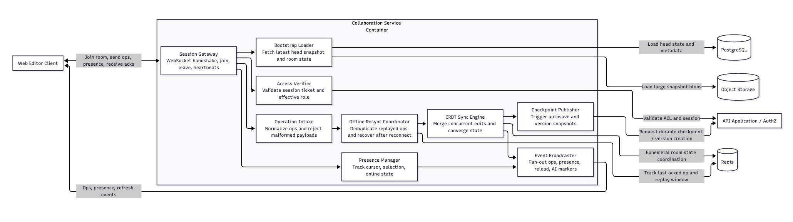

Part 1: Requirements Engineering
Project
Collaborative Document Editor with AI Writing Assistant
Scope and Assumptions
- The product is a web application used by individuals and organizations.
- Documents are shared in workspaces and can have multiple simultaneous editors.
- AI features include rewrite, summarize, translate, and restructure.
1.1 Stakeholder Analysis
| Stakeholder Category | Goals | Concerns | Influence on Requirements |
|---|---|---|---|
| Workspace Owner / Organization Admin | Manage teams, permissions, and productivity; control AI usage and costs | Unauthorized sharing, runaway AI spending, weak auditability | Drives requirements for role-based access control, organization-level AI quotas, usage reporting, and admin policy controls |
| Security and Compliance Officer | Ensure legal and policy compliance for sensitive content | Data leakage to third-party AI APIs, weak encryption, poor retention controls | Drives requirements for encryption, data minimization, retention limits, audit logs, and explicit AI processing controls |
| Product and Business Stakeholders | Deliver a usable product with good retention and sustainable unit economics | Slow collaboration UX, costly AI workloads, feature confusion | Drives latency targets, usability constraints, feature prioritization, and measurable adoption telemetry |
| Customer Support and Success Teams | Resolve user issues quickly and explain system behavior | Low observability, inability to reconstruct incident timelines | Drives requirements for actionable error states, request IDs, AI interaction history, and support-facing activity logs |
| Platform Operations (SRE/DevOps) | Maintain uptime, performance, and reliable deployments | Service outages, scaling bottlenecks, hard-to-diagnose failures | Drives availability SLAs, graceful degradation, autoscaling expectations, and health/alerting requirements |
| Third-Party AI Provider (External System Stakeholder) | Provide stable, policy-compliant AI inference services | Bursty traffic, malformed prompts, unclear data handling expectations | Drives requirements for rate limiting, fallback behavior, prompt governance, and provider contract constraints |
1.2 Functional Requirements
Functional ID Convention
FR-COL-*: Real-time collaborationFR-AI-*: AI writing assistantFR-DOC-*: Document managementFR-UM-*: User management
1.2.1 Real-Time Collaboration
High-Level Capability Statement
| ID | Description | Triggering Condition | Expected System Behavior | Acceptance Criteria |
|---|---|---|---|---|
| FR-COL-HL | The system shall support multi-user real-time co-editing with presence awareness and deterministic conflict handling. | Two or more authenticated users open the same editable document. | All users can edit concurrently, see participant presence, and converge on the same document state without manual merges in normal operation. | In a controlled test with 20 concurrent editors, all clients converge to identical content and presence indicators remain consistent throughout the session. |
Testable Sub-Requirements
| ID | Description | Triggering Condition | Expected System Behavior | Acceptance Criteria |
|---|---|---|---|---|
| FR-COL-01 | Simultaneous editing with eventual consistency | Two or more editors submit operations on the same document within overlapping time windows. | The system applies local edits immediately and synchronizes operations so all clients converge to a single canonical state. | With 50 editors producing edits for 10 minutes, final document hash is identical on all clients within 2 seconds after edit stream stops. |
| FR-COL-02 | Presence awareness | A user joins, leaves, or changes cursor/selection location in a shared document. | The system broadcasts online status and cursor position updates to authorized collaborators. | Join/leave events are reflected to other clients within 1 second; stale presence is removed within 30 seconds of disconnect. |
| FR-COL-03 | Overlapping-edit conflict handling | Two users modify overlapping text ranges before receiving each other's updates. | The system applies one deterministic merge policy across all clients; when both edits cannot be represented simultaneously, it creates a conflict suggestion that references both proposed changes. | In 100 scripted overlap test cases, all clients converge to identical text within 2 seconds; in pre-labeled non-mergeable cases, a conflict suggestion is present and includes both author IDs. |
| FR-COL-04 | Offline editing and resynchronization | An editor loses connectivity during an active session and reconnects later. | Local edits are queued client-side, document remains editable in offline mode, and queued operations replay automatically on reconnect. | User can make at least 200 offline operations over 5 minutes; after reconnect, queued edits are synchronized without duplicate application. |
| FR-COL-05 | Session bootstrap consistency | A user opens an already-active collaborative document session. | The user receives the latest committed document state plus currently active participants before first local edit is accepted. | New participant sees current content and active presence list before cursor becomes editable in 100 percent of join tests. |
1.2.2 AI Writing Assistant
High-Level Capability Statement
| ID | Description | Triggering Condition | Expected System Behavior | Acceptance Criteria |
|---|---|---|---|---|
| FR-AI-HL | The system shall provide in-context AI assistance for rewrite, summarize, translate, and restructure workflows with user-controlled acceptance. | A user with AI permission invokes an AI action from the editor. | The system processes selected scope, returns suggestions, and lets user accept, reject, or modify results before committing changes. | For each AI feature type, an authorized user can invoke the action and commit or reject output without blocking normal editing. |
Testable Sub-Requirements
| ID | Description | Triggering Condition | Expected System Behavior | Acceptance Criteria |
|---|---|---|---|---|
| FR-AI-01 | AI invocation from explicit user intent | User selects text or document section and chooses an AI action with parameters. | System creates an AI job with scope, feature type, language/format options, and user identity context. | API request contains scope, operation type, and user ID for 100 percent of valid AI submissions. |
| FR-AI-02 | Suggestion presentation with diff context | AI job completes successfully. | AI output is displayed as a tracked proposal showing original and suggested text differences. | User can view before/after diff and choose Accept, Reject, or Edit actions for every suggestion. |
| FR-AI-03 | Partial acceptance and manual refinement | User selects only a portion of an AI suggestion to apply. | System applies selected segments only and preserves unaccepted portions as unchanged original text. | In partial-accept test, only selected spans are committed and final text matches user-selected fragments exactly. |
| FR-AI-04 | Async status and cancellation | AI processing exceeds immediate response window or user cancels request. | System shows job status (queued, in-progress, completed, failed, canceled) and supports cancellation before completion. |
Status transitions are observable via API/UI; canceled jobs apply zero text changes and are marked canceled. |
| FR-AI-05 | Role and quota enforcement | User attempts AI action. | System validates role permissions and quota limits before forwarding request to LLM provider. | Unauthorized role receives 403; quota-exceeded user receives quota-specific error and no provider call is made. |
| FR-AI-06 | AI interaction history | Any AI request completes, fails, or is canceled. | System records request metadata, scope, model used, and final user action (accepted/rejected/partial) in an audit trail. | For every AI request ID, support/admin can retrieve lifecycle status and final user decision from history records. |
1.2.3 Document Management
High-Level Capability Statement
| ID | Description | Triggering Condition | Expected System Behavior | Acceptance Criteria |
|---|---|---|---|---|
| FR-DOC-HL | The system shall manage full document lifecycle: creation, storage, versioning, sharing, and export. | A user creates or accesses a document resource. | System provides persistent document operations with version safety and permission-aware sharing/export. | A document can be created, edited, versioned, shared, and exported end-to-end through API and UI flows. |
Testable Sub-Requirements
| ID | Description | Triggering Condition | Expected System Behavior | Acceptance Criteria |
|---|---|---|---|---|
| FR-DOC-01 | Document creation and metadata initialization | Authorized user creates a new document. | System creates document with owner, title, timestamps, default ACL, and empty or template content. | Create endpoint returns persistent document ID and required metadata fields in the response contract. |
| FR-DOC-02 | Version snapshotting | User saves manually, autosave interval elapses, or major operation (e.g., AI apply) occurs. | System stores immutable version checkpoints with author, time, and change summary. | Version history lists checkpoints in chronological order and each version can be fetched by ID. |
| FR-DOC-03 | Safe revert during active collaboration | User selects an older version while collaborators are online. | System creates a new head version from selected snapshot and notifies active collaborators of revert event. | Revert does not delete intermediate history; collaborators receive state refresh and can continue editing. |
| FR-DOC-04 | Sharing and access control grants | Owner/admin shares document with user, group, or link configuration. | System assigns explicit permission level (owner, editor, commenter, viewer) with optional expiration. |
Shared principal receives exact configured permissions; expired grants are denied automatically. |
| FR-DOC-05 | Export in common formats | User requests export. | System produces document export in at least PDF, DOCX, and Markdown, respecting permissions. |
Exported file downloads successfully and preserves heading structure and text content in supported format. |
| FR-DOC-06 | Export with AI change trace option | User enables "include AI suggestions trail" during export. | System generates export containing accepted AI changes and a separate change-log section/artifact. | Export package includes main document and AI change trace with request IDs and acceptance status. |
1.2.4 User Management
High-Level Capability Statement
| ID | Description | Triggering Condition | Expected System Behavior | Acceptance Criteria |
|---|---|---|---|---|
| FR-UM-HL | The system shall authenticate users, authorize actions by role, and manage secure sessions across devices. | Any protected API or document action is requested. | System verifies identity, enforces role-based permissions, and maintains valid session lifecycle. | Protected actions succeed only for authenticated users with required permissions in role-matrix tests. |
Testable Sub-Requirements
| ID | Description | Triggering Condition | Expected System Behavior | Acceptance Criteria |
|---|---|---|---|---|
| FR-UM-01 | User authentication | User submits login credentials or SSO assertion. | System authenticates identity and issues session tokens on success. | Invalid credentials are rejected; successful login returns signed session artifacts and user role context. |
| FR-UM-02 | Role-based authorization matrix | Authenticated user attempts action requiring permissions. | System checks resource ACL and role capabilities before processing action. | viewer cannot edit; commenter cannot directly modify body text; editor can edit; owner can manage sharing. |
| FR-UM-03 | Session lifecycle handling | Session created, refreshed, expired, or revoked. | System enforces token expiration, supports refresh flow, and supports remote session revocation. | Expired sessions are denied; revoked session cannot call protected endpoints after revocation event. |
| FR-UM-04 | Fine-grained AI permissions by role | Role policy is configured at workspace level. | AI feature availability is checked per role and per feature type at invocation time. | Policy toggle can disable translate for commenter while keeping summarize enabled, enforced immediately. |
| FR-UM-05 | Unauthorized action handling | User attempts forbidden action from UI or API. | System returns 403 Forbidden with error code AUTHZ_FORBIDDEN, performs no state mutation, and logs the denied attempt with request ID. |
In role-matrix tests, every forbidden operation returns 403 + AUTHZ_FORBIDDEN; document hash and version count remain unchanged after each denied attempt. |
| FR-UM-06 | Security-relevant audit logging | Privileged actions occur (share changes, role changes, AI policy changes). | System records actor, target, timestamp, action type, and result. | Audit query returns complete event entries for all privileged actions in the selected period. |
1.3 Non-Functional Requirements
1.3.1 Latency
| ID | Measurable Requirement | Justification (UX) | Verification Method |
|---|---|---|---|
| NFR-LAT-01 | Keystroke propagation latency between collaborators: p95 <= 200 ms, p99 <= 400 ms in same region under normal load. |
Co-editing feels "live" only when remote text appears nearly instantly; above this threshold users begin overwriting each other. | Synthetic load tests with concurrent editors and percentile latency reporting from client telemetry. |
| NFR-LAT-02 | AI response initiation (first status/first token): p95 <= 2.5 s, p99 <= 5 s. |
Users tolerate AI processing if feedback starts quickly; immediate pending signal reduces abandonment. | End-to-end timing from invoke click to first streamed/status event across feature types. |
| NFR-LAT-03 | Document load time to editable state: p95 <= 2 s for documents <= 1 MB and <= 20 active collaborators; p95 <= 5 s for documents up to 10 MB. |
Opening a document is a critical entry point; long waits damage collaboration flow and trust. | Real browser measurements including auth, metadata fetch, content hydration, and presence bootstrap. |
1.3.2 Scalability
| ID | Measurable Requirement | Growth Model / Rationale | Verification Method |
|---|---|---|---|
| NFR-SCL-01 | Support at least 150 concurrent editors on a single document. |
Covers high-collaboration team and classroom-style sessions. | Load test with realistic edit patterns and presence updates. |
| NFR-SCL-02 | Support at least 75,000 concurrently open document sessions system-wide. |
Baseline capacity for early multi-tenant scale without architecture redesign. | Multi-document session simulation with horizontal scaling enabled. |
| NFR-SCL-03 | Sustain 12% monthly active-session growth for 12 months with horizontal scaling only (no breaking API changes). |
Ensures architecture can scale predictably as adoption increases. | Capacity plan plus staged stress tests at 1x, 2x, and 3x projected traffic. |
1.3.3 Availability
| ID | Measurable Requirement | Rationale | Verification Method |
|---|---|---|---|
| NFR-AVL-01 | Core editing and document APIs availability target: 99.9% monthly. |
Collaboration is a daily workflow tool; prolonged downtime directly blocks work. | Uptime SLI/SLO tracking with monthly error-budget reports. |
| NFR-AVL-02 | On single collaboration node failure, active sessions reconnect and resume within <= 10 s. |
Users should recover quickly from partial outages without manual intervention. | Fault-injection test killing active node during live editing sessions. |
| NFR-AVL-03 | In-progress local edits must not be lost during transient backend outage up to 5 min. |
Prevents trust loss from perceived data loss events. | Chaos test with backend disruption while clients continue local edits. |
| NFR-AVL-04 | If AI provider is unavailable, editing remains fully functional and AI requests fail fast with actionable message in <= 3 s. |
AI is important but must not block core editing workflow. | Provider outage simulation validating graceful degradation path. |
1.3.4 Security and Privacy
| ID | Measurable Requirement | Rationale | Verification Method |
|---|---|---|---|
| NFR-SEC-01 | All client-server and service-to-service traffic uses TLS 1.2+; insecure transport is rejected. | Protects document content and credentials in transit. | Automated TLS scanning and transport policy tests. |
| NFR-SEC-02 | Document and version data at rest encrypted with AES-256 (or cloud KMS equivalent), including backups. | Mitigates impact of storage compromise. | Storage configuration audits and encryption-at-rest compliance checks. |
| NFR-SEC-03 | AI requests must support minimum-scope mode (selection-only) and optional redaction of configured sensitive patterns before provider call. | Reduces exposure of unnecessary sensitive context to third parties. | Integration tests confirming redaction and scope controls in AI payloads. |
| NFR-SEC-04 | Third-party LLM providers used in production must contractually disable training on customer prompts/responses by default. | Limits downstream privacy and IP leakage risks. | Vendor policy review and contract checklist gating deployment. |
| NFR-SEC-05 | AI interaction logs retain full prompt/response for max 30 days; after that, retain only minimal metadata for 180 days. |
Balances debugging/support needs with data minimization obligations. | Scheduled retention job tests and periodic storage audits. |
1.3.5 Usability
| ID | Measurable Requirement | Rationale | Verification Method |
|---|---|---|---|
| NFR-USE-01 | For documents with >= 200 pages, editor remains interactive (>= 45 FPS while scrolling on target desktop baseline). |
Large documents are common in team workflows and must remain usable. | Performance profiling on representative hardware with large fixtures. |
| NFR-USE-02 | When >20 collaborators are active, UI must cluster or prioritize presence indicators to avoid visual overload while preserving awareness. | Full cursor rendering at high participant counts becomes unusable. | Usability tests with high-collaboration scenarios and task completion metrics. |
| NFR-USE-03 | Accessibility target: WCAG 2.2 AA for key flows (edit, share, AI invoke, version restore). | Ensures equitable access and broad organizational adoption. | Automated accessibility scans plus manual keyboard/screen-reader checks. |
| NFR-USE-04 | Critical errors must provide actionable feedback in plain language and preserve unsaved local work. | Prevents user confusion and accidental data loss during failures. | UX acceptance tests covering auth failures, quota errors, and outage states. |
1.4 User Stories and Scenarios
| ID | User Story (Standard Format) | Expected Behavior (for scenario and acceptance) | Design Justification |
|---|---|---|---|
| US-01 | As an editor, I want my offline edits to sync after reconnection so that I do not lose work during temporary network drops. | Client enters offline mode, queues edits locally, and replays them on reconnect with duplicate prevention. Conflicts are surfaced as suggestions if semantic ambiguity remains. | Offline resilience is essential for reliability in unstable networks and protects user trust. |
| US-02 | As an editor, I want concurrent edits in the same paragraph to merge predictably so that teamwork remains fast without manual copy-paste reconciliation. | Overlapping edits are deterministically merged at operation level; unresolved semantic collisions are flagged instead of silently overwritten. | Deterministic behavior prevents hidden data loss and reduces collaboration friction. |
| US-03 | As a document owner, I want to revert to a previous version while others are editing so that I can recover from mistakes without blocking the team. | Revert creates a new head from historical snapshot; current collaborators get a non-destructive refresh event and continue editing from new head. | Non-destructive revert preserves auditability and avoids history corruption. |
| US-04 | As an editor, I want to select a paragraph and request a summary so that I can produce concise executive notes quickly. | User selects text, invokes summarize, receives tracked suggestion, and can accept/reject/edit before commit. | Selection-scoped AI keeps outputs relevant and reduces unnecessary data exposure. |
| US-05 | As an editor, I want to translate a section into another language so that I can collaborate with multilingual teammates. | Translation operates on selected scope with target language parameter and preserves formatting where possible. | Scoped translation reduces latency and cost compared with whole-document translation. |
| US-06 | As an editor, I want AI to restructure an outline so that I can improve document organization rapidly. | AI returns structural proposal (headings/sections), presented as preview diff before apply. | Preview-first flow keeps user in control of major structural changes. |
| US-07 | As an editor, I want to partially accept an AI rewrite so that I can keep useful phrases and discard the rest. | User can select fragments from AI suggestion to apply; unselected portions remain original text. Full undo is available after apply. | Partial acceptance improves practical usefulness because AI output quality varies by segment. |
| US-08 | As an owner, I want to share a document with read-only access so that stakeholders can review content safely. | Invite/link grants viewer role; viewers can read/export but cannot edit body text. |
Principle of least privilege reduces accidental or unauthorized modifications. |
| US-09 | As an editor, I want to export a document with AI-suggested changes tracked separately so that I can share final output and provenance together. | Export package includes primary file and AI change trail artifact with suggestion metadata and status. | Transparent provenance is important for review, compliance, and trust in AI-assisted writing. |
| US-10 | As a team lead, I want to review AI interaction history so that I can understand how critical sections evolved and coach writing standards. | History view shows who invoked AI, feature type, scope, timestamps, and accepted/rejected outcomes. | Observability supports governance and support without reading raw chat logs. |
| US-11 | As a commenter, I want the system to enforce AI usage policy by role so that permissions stay aligned with team governance. | If AI is not allowed for commenter, invoke action is blocked with clear policy message and no backend mutation. |
Role-aware AI policy prevents privilege creep and unexpected spend. |
| US-12 | As an organization admin, I want to configure which AI features each role can use so that I can control risk and cost. | Admin policy panel supports per-role feature toggles; changes take effect immediately for new requests. | Centralized controls are required for enterprise governance and budgeting. |
| US-13 | As a viewer, I want failed edit attempts to be handled gracefully so that I understand my permissions without confusion. | Edit action is prevented with inline explanation and option to request elevated access; document state remains unchanged. | Clear denial UX reduces support burden and avoids accidental data corruption attempts. |
1.5 Requirements Traceability
1.5.1 Architecture Component Mapping
| Component ID | Component Name | Purpose |
|---|---|---|
| AC-01 | Web Editor SPA (Part 2 Container) | Editor UI, local state, offline queue, AI suggestion UX |
| AC-02 | Collaboration Service (Part 2 Container) | Session orchestration, participant presence, operation fan-out |
| AC-03 | CRDT Sync Engine (Part 2 L3 Component) | Deterministic concurrent edit merge and convergence |
| AC-04 | API Application (Part 2 Container) | Authenticated API surface for documents, sharing, versions, AI jobs |
| AC-05 | Document/Metadata Module (inside API) | Document CRUD, metadata lifecycle, and routing |
| AC-06 | Versioning Module (inside API) | Immutable snapshots and revert-as-new-head workflows |
| AC-07 | Identity/Authorization Module (inside API + IdP integration) | Authentication, RBAC checks, policy enforcement |
| AC-08 | AI Orchestrator Worker (Part 2 Container) | AI job lifecycle, prompt assembly, provider routing |
| AC-09 | LLM Provider Adapter (inside AI worker) | Third-party model integration and failure normalization |
| AC-10 | Event Channel (WebSocket + SSE) | Real-time ops/presence and async AI status updates |
| AC-11 | Data Stores (PostgreSQL + Object Storage) | Persistent documents, versions, AI metadata, exports |
| AC-12 | Audit/Activity Logging (API + storage) | Security-relevant actions and AI interaction history |
1.5.2 User Story to Requirement to Component Matrix
| User Story | Functional Requirements | Architecture Components |
|---|---|---|
| US-01: Offline edit sync after reconnection | FR-COL-04: Offline editing and resynchronization; FR-COL-01: Simultaneous editing with eventual consistency | AC-01: Web Editor SPA; AC-02: Collaboration Service; AC-03: CRDT Sync Engine; AC-10: Event Channel |
| US-02: Predictable concurrent paragraph merge | FR-COL-01: Simultaneous editing with eventual consistency; FR-COL-03: Overlapping-edit conflict handling | AC-01: Web Editor SPA; AC-02: Collaboration Service; AC-03: CRDT Sync Engine |
| US-03: Revert to a previous version during active editing | FR-DOC-03: Safe revert during active collaboration; FR-DOC-02: Version snapshotting | AC-01: Web Editor SPA; AC-05: Document/Metadata Module; AC-06: Versioning Module; AC-10: Event Channel; AC-11: Data Stores |
| US-04: Paragraph summarization on demand | FR-AI-01: AI invocation from explicit user intent; FR-AI-02: Suggestion presentation with diff context | AC-01: Web Editor SPA; AC-04: API Application; AC-08: AI Orchestrator Worker; AC-09: LLM Provider Adapter |
| US-05: Section translation for multilingual collaboration | FR-AI-01: AI invocation from explicit user intent; FR-AI-02: Suggestion presentation with diff context; FR-AI-05: Role and quota enforcement | AC-01: Web Editor SPA; AC-04: API Application; AC-07: Identity/Authorization Module; AC-08: AI Orchestrator Worker; AC-09: LLM Provider Adapter |
| US-06: AI outline restructuring | FR-AI-01: AI invocation from explicit user intent; FR-AI-02: Suggestion presentation with diff context | AC-01: Web Editor SPA; AC-04: API Application; AC-08: AI Orchestrator Worker; AC-09: LLM Provider Adapter |
| US-07: Partial acceptance of AI rewrite | FR-AI-03: Partial acceptance and manual refinement; FR-AI-02: Suggestion presentation with diff context | AC-01: Web Editor SPA; AC-04: API Application; AC-08: AI Orchestrator Worker |
| US-08: Read-only document sharing | FR-DOC-04: Sharing and access control grants; FR-UM-02: Role-based authorization matrix | AC-04: API Application; AC-05: Document/Metadata Module; AC-07: Identity/Authorization Module |
| US-09: Export with AI change trail | FR-DOC-05: Export in common formats; FR-DOC-06: Export with AI change trace option | AC-04: API Application; AC-05: Document/Metadata Module; AC-11: Data Stores; AC-12: Audit/Activity Logging |
| US-10: Review AI interaction history | FR-AI-06: AI interaction history; FR-UM-06: Security-relevant audit logging | AC-04: API Application; AC-08: AI Orchestrator Worker; AC-12: Audit/Activity Logging |
| US-11: AI policy enforcement by role | FR-UM-04: Fine-grained AI permissions by role; FR-AI-05: Role and quota enforcement; FR-UM-05: Unauthorized action handling | AC-01: Web Editor SPA; AC-04: API Application; AC-07: Identity/Authorization Module; AC-08: AI Orchestrator Worker |
| US-12: Configure AI features by role | FR-UM-04: Fine-grained AI permissions by role; FR-UM-06: Security-relevant audit logging | AC-04: API Application; AC-07: Identity/Authorization Module; AC-12: Audit/Activity Logging |
| US-13: Graceful handling of forbidden edits | FR-UM-02: Role-based authorization matrix; FR-UM-05: Unauthorized action handling | AC-01: Web Editor SPA; AC-04: API Application; AC-07: Identity/Authorization Module |
1.5.3 Requirement Coverage to Architecture Components
| Requirement Titles | Mapped Architecture Components |
|---|---|
| FR-COL-HL: Multi-user real-time co-editing capability; FR-COL-01: Simultaneous editing with eventual consistency; FR-COL-02: Presence awareness; FR-COL-03: Overlapping-edit conflict handling; FR-COL-04: Offline editing and resynchronization; FR-COL-05: Session bootstrap consistency | AC-01: Web Editor SPA; AC-02: Collaboration Service; AC-03: CRDT Sync Engine; AC-10: Event Channel |
| FR-AI-HL: In-context AI assistance capability; FR-AI-01: AI invocation from explicit user intent; FR-AI-02: Suggestion presentation with diff context; FR-AI-03: Partial acceptance and manual refinement; FR-AI-04: Async status and cancellation; FR-AI-05: Role and quota enforcement; FR-AI-06: AI interaction history | AC-01: Web Editor SPA; AC-04: API Application; AC-07: Identity/Authorization Module; AC-08: AI Orchestrator Worker; AC-09: LLM Provider Adapter; AC-12: Audit/Activity Logging |
| FR-DOC-HL: Full document lifecycle management capability; FR-DOC-01: Document creation and metadata initialization; FR-DOC-02: Version snapshotting; FR-DOC-03: Safe revert during active collaboration; FR-DOC-04: Sharing and access control grants; FR-DOC-05: Export in common formats; FR-DOC-06: Export with AI change trace option | AC-01: Web Editor SPA; AC-04: API Application; AC-05: Document/Metadata Module; AC-06: Versioning Module; AC-10: Event Channel; AC-11: Data Stores; AC-12: Audit/Activity Logging |
| FR-UM-HL: Authentication, authorization, and session management capability; FR-UM-01: User authentication; FR-UM-02: Role-based authorization matrix; FR-UM-03: Session lifecycle handling; FR-UM-04: Fine-grained AI permissions by role; FR-UM-05: Unauthorized action handling; FR-UM-06: Security-relevant audit logging | AC-01: Web Editor SPA; AC-04: API Application; AC-07: Identity/Authorization Module; AC-12: Audit/Activity Logging |
Traceability Completeness Check
- Every user story (
US-01toUS-13) maps to one or more functional requirements. - Every functional requirement maps to at least one architecture component.
- Component responsibilities are aligned with the Part 2 container and component design.
Part 2: System Architecture
Every diagram in this report includes an embedded Mermaid source block and a rendered image. Standalone Mermaid source files are also stored in docs/architecture/diagrams/.
2.1 C4 Architecture
2.1.1 Top Architectural Drivers
The architecture is ranked by both functional and quality drivers from Part 1:
| Rank | Driver | Why it is high priority | Architecture impact |
|---|---|---|---|
| 1 | Real-time co-edit latency and convergence (FR-COL-01, NFR-LAT-01) |
The core product value is live collaboration; delayed or divergent edits break trust immediately. | Push-based sync service, CRDT merge engine, in-memory room state in Redis, and client-side immediate local apply. |
| 2 | Overlapping edit conflict handling (FR-COL-03) |
Concurrent same-region edits are common in shared drafting and must never silently lose content. | Deterministic merge policy in collaboration components, conflict suggestion path, and replay-safe operation pipeline. |
| 3 | Resilience and offline recovery (FR-COL-04, NFR-AVL-02, NFR-AVL-03) |
Users must keep writing during transient failures and reconnect safely. | Client offline queue, reconnect replay coordinator, duplicate-op suppression, and fast session bootstrap path. |
| 4 | Privacy and authorization boundaries (FR-UM-02, FR-AI-05, NFR-SEC-01, NFR-SEC-03) |
Documents can be sensitive and AI calls cross trust boundaries to third-party providers. | Dedicated authz checks in API and collaboration paths, scoped AI context by default, TLS everywhere, and auditable request flow. |
| 5 | AI responsiveness and graceful degradation (FR-AI-01, FR-AI-04, NFR-LAT-02, NFR-AVL-04) |
AI is valuable but cannot block writing; users need visible progress and safe failure behavior. | Async AI worker, queue-backed execution, SSE status stream, cancel support, and fail-fast provider outage handling. |
| 6 | Version safety and history integrity (FR-DOC-02, FR-DOC-03) |
Teams need recoverability and accountability during active collaboration. | Append-only version store, revert-as-new-head model, and collaboration reload event on revert. |
| 7 | System scale growth (NFR-SCL-01, NFR-SCL-02) |
Collaboration and AI usage can grow quickly across many documents and tenants. | Horizontally scalable stateless API/collab nodes, shared contracts package, and split services (api, collab, ai-worker). |
Because this ranking includes both UX-critical latency/reliability and governance/privacy drivers, the chosen architecture is intentionally split between low-latency collaboration paths and asynchronous, policy-guarded AI/data workflows.
2.1.2 Level 1 - System Context Diagram
The system context shows the collaborative editor as a single product boundary. The primary external actors are collaborators and workspace administrators. The only external systems that are essential at this level are the identity provider for authentication and the third-party LLM provider used to generate AI suggestions.
Mermaid source:
flowchart LR
collaborator[Collaborator<br/>Editor / Commenter / Viewer]
admin[Workspace Admin]
idp[External Identity Provider<br/>OIDC / SAML]
llm[Third-Party LLM Provider<br/>Inference API]
subgraph system[Collaborative Document Editor with AI Writing Assistant]
platform[System Under Design]
end
collaborator -->|Create, edit, comment, export, request AI help| platform
admin -->|Manage members, sharing, AI policy, quotas, audit| platform
platform -->|Authenticate users and validate sessions| idp
platform -->|Send scoped prompts and receive completions| llm
This level answers the C4 question "what does the system interact with?" Editing and permission checks stay inside the product, while login and LLM calls stay outside. That is important because those outside services can be slow or unavailable, and the editor should still fail in a controlled way.
2.1.3 Level 2 - Container Diagram
The container view breaks the system into the main running parts. The browser client handles the editor UI, local state, offline storage, and AI suggestion display. The API app handles normal backend actions like documents, sharing, versions, and permissions. A separate collaboration service handles live syncing and presence. AI runs in a background worker so a slow AI request does not block typing.
Mermaid source:
flowchart LR
user[Collaborator / Admin]
idp[External Identity Provider<br/>OIDC / SAML]
llm[Third-Party LLM Provider<br/>LLM API]
subgraph system[Collaborative Document Editor with AI Writing Assistant]
web[Web Editor SPA<br/>React + TypeScript + TipTap/Yjs + IndexedDB<br/>Rich-text editing, local state, offline queue, AI UX]
api[API Application<br/>NestJS + TypeScript REST/SSE<br/>Document CRUD, sharing, versions, authz, AI/job APIs]
collab[Collaboration Service<br/>Node.js + Hocuspocus/Yjs over WebSocket<br/>Live sync, presence, bootstrap, reconnect]
ai[AI Orchestrator Worker<br/>Node.js + BullMQ<br/>Prompt assembly, quotas, model routing, suggestion artifacts]
postgres[(PostgreSQL<br/>Users, documents, permissions, versions,<br/>AI metadata, audit events)]
redis[(Redis<br/>Presence, room cache, pub/sub,<br/>AI job queue)]
object[(Object Storage<br/>Version snapshots, exports,<br/>large AI suggestion payloads)]
end
user -->|HTTPS| web
web -->|REST/JSON + SSE| api
web <--> |WebSocket ops, presence, acks| collab
api -->|OIDC redirect / token validation| idp
api -->|SQL| postgres
api -->|Cache, pub/sub, job enqueue| redis
api -->|Read and write snapshots / exports| object
collab -->|Load head state / checkpoint metadata| postgres
collab -->|Presence fan-out / room coordination| redis
collab -->|Read and write large checkpoints| object
ai -->|Dequeue jobs / publish completion| redis
ai -->|Read document context / persist status| postgres
ai -->|Store suggestion payloads| object
ai -->|HTTPS prompt / response| llm

The technology choices are fairly practical. The web client uses TypeScript, TipTap/ProseMirror, and Yjs for rich-text editing and shared editing state. The API and worker also use TypeScript so shared types and validation rules are easier to reuse. Redis handles short-term data like presence, room state, and AI job queues, while PostgreSQL is the main database for users, documents, permissions, versions, AI records, and audit logs.
2.1.4 Level 3 - Component Diagram (Collaboration Service)
The collaboration service is the most sensitive part of the architecture because it directly handles simultaneous editing, offline recovery, and predictable handling of overlapping edits. Its internal parts are separated so session handling, merge logic, replay logic, presence, and version checkpoint creation can be changed more easily later.
Mermaid source:
flowchart LR
client[Web Editor Client]
api[API Application / AuthZ]
postgres[(PostgreSQL)]
redis[(Redis)]
object[(Object Storage)]
subgraph collab[Collaboration Service Container]
gateway[Session Gateway<br/>WebSocket handshake, join, leave, heartbeats]
authz[Access Verifier<br/>Validate session ticket and effective role]
bootstrap[Bootstrap Loader<br/>Fetch latest head snapshot and room state]
intake[Operation Intake<br/>Normalize ops and reject malformed payloads]
resync[Offline Resync Coordinator<br/>Deduplicate replayed ops and recover after reconnect]
sync[CRDT Sync Engine<br/>Merge concurrent edits and converge state]
presence[Presence Manager<br/>Track cursor, selection, online state]
broadcast[Event Broadcaster<br/>Fan-out ops, presence, reload, AI markers]
checkpoint[Checkpoint Publisher<br/>Trigger autosave and version snapshots]
end
client <--> |Join room, send ops, presence, receive acks| gateway
gateway --> authz
authz -->|Validate ACL and session| api
gateway --> bootstrap
bootstrap -->|Load head state and metadata| postgres
bootstrap -->|Load large snapshot blobs| object
gateway --> intake
intake --> resync
resync -->|Track last acked op and replay window| redis
resync --> sync
gateway --> presence
presence --> broadcast
sync -->|Ephemeral room state coordination| redis
sync --> broadcast
sync --> checkpoint
checkpoint -->|Request durable checkpoint / version creation| api
broadcast -->|Ops, presence, refresh events| client

Two design decisions are important here. First, the merge engine uses a CRDT (Conflict-free Replicated Data Type, a way to merge edits safely) so disconnected clients can keep working and still end up with the same final document. Second, version checkpoint creation is kept outside the merge engine, so saving versions does not slow down the live editing path. That separation matters for FR-COL-01, FR-COL-04, FR-COL-03, and the document versioning requirements.
2.2 Architectural Concerns
2.2.1 Feature Decomposition (Feature Breakdown)
The system is split into modules that can be built and tested fairly independently.
| Module | What it does | Depends on | Interface exposed to other modules |
|---|---|---|---|
| Rich-text editor and frontend state management | Shows the document, applies local edits right away, stores offline changes in IndexedDB, and shows presence, versions, and AI suggestions. | Shared document structure rules (schema), collaboration session API, AI job API, login/session state. | Editor commands (applyLocalOp, acceptSuggestion, revertVersion), UI state events, document view model. |
| Real-time synchronization layer | Keeps live document rooms running, merges edits from different users, tracks presence, replays missed changes after reconnect, and sends refresh events after a revert. | WebSocket transport, CRDT document model (shared merge model), Redis room state, document snapshots. | Session join/leave, operation stream, presence events, ack/replay rules, refresh notifications. |
| AI assistant service | Receives AI requests, builds prompts, checks role and quota rules, calls the provider, stores saved suggestion results, and sends status updates. | Document content access, prompt templates, LLM adapter, quota policy, audit logging. | createAiRequest, cancelAiRequest, getAiStatus, applySuggestion, rejectSuggestion. |
| Document storage and versioning | Creates documents, stores metadata, writes saved versions that are not changed later, lists history, restores old states by creating a new head version, and prepares exports. | PostgreSQL metadata, object storage, authorization, collaboration refresh events. | CRUD APIs, version listing, snapshot creation, revert command, export generation. |
| User authentication and authorization | Authenticates users, resolves workspace and document roles, enforces permission matrix for edit/share/AI/revert actions, records privileged operations. | Identity provider integration, membership data, document permissions, AI policy settings. | Session validation, role lookup, access checks, AI feature policy lookup, audit events. |
| API layer connecting frontend and backend | Exposes stable backend interfaces, prepares data for the client, creates collaboration session tokens, and exposes SSE (Server-Sent Events, one-way live updates) for long AI jobs. | Authorization service, document service, versioning service, AI worker flow, audit logging. | REST endpoints, SSE streams, session start data, standard error response format. |
This split matches the traceability matrix in Part 1. The editor and collaboration layer own fast live behavior. The AI assistant and document/versioning parts own slower background work and saved data. The API and auth layers are the main boundary used by the client and by other internal services.
2.2.2 AI Integration Design
Context and Scope
AI requests are selection-first by default. For rewrite, summarize, and translate, the client sends the selected text plus a small amount of nearby context, such as the document title, heading path, and nearby paragraphs. This keeps cost lower, makes responses faster, and sends less private data to the third-party LLM provider.
For restructure requests, the scope grows from just the selection to the section or document outline, because the local text alone is usually not enough. Very long documents are handled in steps:
- First, build an outline and a meaning-based summary from stored metadata and nearby headings.
- Second, split large text into fixed-size chunks so the prompt size stays predictable.
- Third, keep the base document version and selection hash with the AI request so the result can later be matched back to the current content.
This means the AI may see a little less of the full document, but the trade-off is worth it because cost and response time stay more predictable. That fits this product, since users review suggestions instead of letting the AI rewrite the whole document automatically.
Suggestion UX
AI output is shown like tracked changes instead of replacing the text immediately. The UI has three connected views:
- Inline highlights in the editor show exactly which ranges would change.
- A side panel shows the full before/after diff, status, and model metadata.
- Accept, reject, partial-accept, and edit actions let the user stay in control.
Partial acceptance works by applying only the selected parts of the saved suggestion result. Accepted changes become normal document edits, so undo works through the same local history used for human edits. A successful accept can also create a version checkpoint if the change is large enough based on a config setting.
AI During Collaboration
The system does not hard-lock text when AI is used. Instead, it stores the request with the base document version and selected range, then shows a small "AI drafting" marker to collaborators looking at the same area.
If other users edit the region while the AI job is running:
- Editing continues normally.
- When the AI result arrives, the client tries to match the suggestion to the current CRDT state (the shared merge state).
- If that match is safe, the user sees an updated proposal against the latest text.
- If the region diverged too much, the UI marks the result as stale and asks the requester to review or regenerate.
This avoids blocking collaboration and keeps the behavior easy to trust. Other collaborators never get a hidden AI overwrite. They only see a suggestion or, after explicit acceptance, a normal document change.
Prompt Design
Prompt logic is template-based and versioned. Each feature has:
- A base system instruction
- A feature template (
rewrite,summarize,translate,restructure) - Runtime variables such as tone, target language, heading path, and length target
- Output rules (contracts) that tell the model to return structured results, such as patch text and explanation fields
Templates live in shared config instead of being hardcoded in source files, so prompt changes can be rolled out without redeploying every service. The AI worker loads the active prompt versions at startup and can refresh them through a feature flag (config switch) or config update channel.
Model and Cost Strategy
Different models are used for different tasks:
- Low-cost, low-latency model for summarize and translate on bounded selections
- Higher-quality model for rewrite and restructure where instruction following matters more
- Optional enterprise option for privacy-sensitive customers that need a different provider
Cost control is checked at both user and workspace level. Each AI request checks:
- Role permission for the requested feature
- Remaining user quota
- Workspace budget ceiling
- Whether the provider is healthy and still within time limits
When a limit is exceeded, the request is rejected before any provider call is made. The user gets a quota-specific error, sees remaining allowance when useful, and can keep using the rest of the editor normally.
2.2.3 API Design
API Style Choices
The system uses a mix of API styles because the interactions are different:
| Interaction type | Style | Why this fits |
|---|---|---|
| Document CRUD, permissions, version history, exports | REST/JSON over HTTPS | Good for normal data actions, easy to understand, easy to version, and easy to log. |
| Live editing, presence, operation acks, reconnect replay | WebSocket connection (two-way live connection) | Needed because editing is live and both client and server need to send updates quickly. |
| AI job status and progress updates | Server-Sent Events (SSE, one-way live updates from server to client), with polling fallback | Good for long AI jobs where the server mainly needs to push status updates back to the client. |
Concrete API Contracts
Document CRUD and Versioning
| Method | Endpoint | Purpose | Success responses |
|---|---|---|---|
POST |
/v1/documents |
Create a document with initial metadata and optional template content. | 201 Created |
GET |
/v1/documents/{documentId} |
Fetch document metadata plus the current content snapshot used by the editor. | 200 OK |
PATCH |
/v1/documents/{documentId} |
Update mutable metadata such as title or status. | 200 OK |
DELETE |
/v1/documents/{documentId} |
Soft-delete or archive a document. | 204 No Content |
GET |
/v1/documents/{documentId}/versions |
List saved versions that are not changed later. | 200 OK |
GET |
/v1/documents/{documentId}/versions/{versionId} |
Fetch version metadata and snapshot link. | 200 OK |
POST |
/v1/documents/{documentId}/versions/{versionId}:revert |
Create a new head version from a historical version. | 202 Accepted |
POST |
/v1/documents/{documentId}/exports |
Create an export job with format and AI-trail options. | 202 Accepted |
Example request for document creation:
{
"workspaceId": "ws_123",
"title": "Q3 Product Brief",
"templateId": null,
"initialContent": {
"type": "doc",
"content": []
}
}
Example response:
{
"documentId": "doc_456",
"workspaceId": "ws_123",
"title": "Q3 Product Brief",
"ownerRole": "owner",
"currentVersionId": "ver_001",
"createdAt": "2026-03-16T11:25:00Z"
}
Example response for document load:
{
"documentId": "doc_456",
"workspaceId": "ws_123",
"title": "Q3 Product Brief",
"ownerRole": "owner",
"currentVersionId": "ver_001",
"createdAt": "2026-03-16T11:25:00Z",
"content": {
"type": "doc",
"content": [
{
"type": "paragraph",
"text": "Initial PoC content"
}
]
},
"updatedAt": "2026-03-16T11:25:00Z"
}
Real-Time Session Management
| Method | Endpoint | Purpose | Success responses |
|---|---|---|---|
POST |
/v1/documents/{documentId}/sessions |
Create a collaboration session token and starting data. | 201 Created |
GET |
/v1/documents/{documentId}/sessions/{sessionId} |
Read session state for reconnect diagnostics. | 200 OK |
DELETE |
/v1/documents/{documentId}/sessions/{sessionId} |
End the session explicitly. | 204 No Content |
Example response when starting a live editing session:
{
"sessionId": "ses_789",
"wsUrl": "wss://collab.example.com/rooms/doc_456",
"sessionToken": "signed-short-lived-token",
"headVersionId": "ver_031",
"stateVector": "base64-encoded-yjs-state-vector",
"presence": [
{
"userId": "usr_101",
"displayName": "Nino"
}
],
"permissions": {
"role": "editor",
"canInvokeAi": true,
"canRevert": false
}
}
WebSocket message format for collaboration:
| Direction | Event | Example payload |
|---|---|---|
| Client -> Server | client.ops |
{ "sessionId": "...", "clientSeq": 42, "ops": [...], "baseStateVector": "..." } |
| Client -> Server | client.presence |
{ "sessionId": "...", "cursor": {...}, "selection": {...} } |
| Server -> Client | server.ack |
{ "ackClientSeq": 42, "serverRevision": 311, "stateVector": "..." } |
| Server -> Client | server.ops |
{ "serverRevision": 312, "ops": [...], "authorUserId": "usr_101" } |
| Server -> Client | server.reload_required |
{ "reason": "revert_created_new_head", "newVersionId": "ver_032" } |
| Server -> Client | server.presence |
{ "participants": [...] } |
AI Assistant Invocation
| Method | Endpoint | Purpose | Success responses |
|---|---|---|---|
POST |
/v1/documents/{documentId}/ai-requests |
Create a new AI job from explicit user intent. | 202 Accepted |
GET |
/v1/ai-requests/{aiRequestId} |
Fetch current job state and result summary. | 200 OK |
GET |
/v1/ai-requests/{aiRequestId}/events |
SSE stream for AI job status changes. | 200 OK |
POST |
/v1/ai-requests/{aiRequestId}:cancel |
Cancel a queued or running AI job. | 202 Accepted |
POST |
/v1/ai-requests/{aiRequestId}/suggestions/{suggestionId}:apply |
Accept all or part of a suggestion. | 200 OK |
POST |
/v1/ai-requests/{aiRequestId}/suggestions/{suggestionId}:reject |
Reject a suggestion. | 200 OK |
AI invocation request:
{
"feature": "summarize",
"scope": {
"type": "selection",
"start": 1220,
"end": 1674
},
"options": {
"tone": "executive",
"maxLength": "short",
"targetLanguage": null
},
"baseVersionId": "ver_031"
}
Accepted response:
{
"aiRequestId": "ai_991",
"status": "queued",
"statusUrl": "/v1/ai-requests/ai_991",
"eventsUrl": "/v1/ai-requests/ai_991/events",
"cancelUrl": "/v1/ai-requests/ai_991:cancel"
}
User and Permission Management
| Method | Endpoint | Purpose | Success responses |
|---|---|---|---|
GET |
/v1/me |
Fetch current identity, workspace memberships, and effective policies. | 200 OK |
GET |
/v1/workspaces/{workspaceId}/members |
List members and workspace roles. | 200 OK |
PATCH |
/v1/workspaces/{workspaceId}/ai-policies |
Update per-role AI feature policy and budget settings. | 200 OK |
GET |
/v1/documents/{documentId}/permissions |
Read the final document access list (ACL, access control list). | 200 OK |
POST |
/v1/documents/{documentId}/shares |
Share document with user, team, or link. | 201 Created |
PATCH |
/v1/documents/{documentId}/shares/{shareId} |
Change permission level or expiry. | 200 OK |
DELETE |
/v1/documents/{documentId}/shares/{shareId} |
Revoke share. | 204 No Content |
Share request example:
{
"principalType": "user",
"principalId": "usr_777",
"permissionLevel": "viewer",
"expiresAt": "2026-04-01T00:00:00Z"
}
Long-Running AI Operations
The client does not wait for the whole AI result inside one request. The flow is:
POST /v1/documents/{documentId}/ai-requestsreturns202 Accepted.- The client immediately subscribes to
/v1/ai-requests/{aiRequestId}/events. - The worker emits
queued,in_progress,completed,failed, orcanceled. - On
completed, the client fetches the saved suggestion result if it was not already included in the event data.
Example SSE status event:
event: ai.status
data: {"aiRequestId":"ai_991","status":"in_progress","progress":"provider_called"}
Polling is still available as a backup option if SSE is blocked in a given environment.
Error Handling Strategy
All error responses use the same JSON shape:
{
"error": {
"code": "AI_QUOTA_EXCEEDED",
"message": "Monthly AI quota exceeded for this workspace.",
"retryable": false,
"requestId": "req_abc123",
"details": {
"quotaScope": "workspace",
"resetsAt": "2026-04-01T00:00:00Z"
}
}
}
Clients distinguish the major AI states as follows:
| Situation | API behavior | Client interpretation |
|---|---|---|
| AI is slow but still healthy | 202 Accepted plus SSE events with queued or in_progress |
Show spinner and keep editor usable. |
| AI failed due to provider or internal error | Final status becomes failed; GET /v1/ai-requests/{id} returns failure reason |
Show error banner and allow retry. |
| User exceeded quota or role policy | Immediate 403 Forbidden or 429 Too Many Requests with specific error code |
Do not create a provider call; show policy/quota message. |
2.2.4 PoC Scope Mapping (Part 4 Alignment)
The implemented Part 4 PoC currently covers only a focused API subset to validate architecture contracts and front-end/back-end wiring:
Implemented in code:
POST /v1/documentsreturns201 Createdwith fields:documentIdworkspaceIdtitleownerRolecurrentVersionIdcreatedAt
GET /v1/documents/{documentId}returns200 OKwith the same metadata plus:contentupdatedAt
- Error envelope contract is implemented for invalid routes and unknown documents:
error.codeerror.messageerror.retryableerror.requestId
Intentionally deferred beyond Part 4 PoC:
- Real-time collaboration channels (
/sessions, WebSocket operation flow) - AI orchestration endpoints and SSE job-stream behavior
- Authentication, authorization, and persistent data storage integrations
- Export, sharing, and version-revert workflows
This deferred scope is deliberate for Part 4 because the rubric asks for a minimal technical skeleton proving contract-correct frontend-backend communication.
2.2.5 Authentication & Authorization
Authentication is required because the system stores private documents, supports sharing, keeps version history, and AI calls cost money. The main user types are workspace admins, document owners, editors, commenters, viewers, and support or audit roles in managed setups.
Role model:
| Role | Main capabilities | Important restrictions |
|---|---|---|
| Owner | Full document control: edit, share, revert versions, delete/archive, export, view AI history. | Cannot bypass workspace-wide compliance rules. |
| Editor | Edit content, accept AI suggestions, use AI features allowed by policy, export, create versions. | Cannot change document ownership or workspace policy. |
| Commenter | Comment, read, and optionally use limited AI features if workspace policy allows suggestion-only use. | Cannot directly change body content or accept AI output that writes to the document unless given more access. |
| Viewer | Read and export if permitted. | Cannot edit, share, revert, or invoke AI. |
| Workspace Admin | Manage memberships, default AI policy, quota budgets, audit visibility. | Is not automatically the owner of every document unless policy gives extra admin access. |
Privacy considerations for third-party LLM use:
- Minimize scope by defaulting to selection-level context.
- Redact configured sensitive patterns before provider calls when workspace policy requires it.
- Require provider agreements that disable model training on customer content by default.
- Encrypt all document and AI metadata in transit and at rest.
- Keep full prompts and responses only for a short support window, then keep only small metadata needed for auditing.
2.2.6 Communication Model
The communication model is real-time and push-based for editing, presence, and reconnect recovery. Polling alone would be simpler, but it cannot meet the collaboration latency targets or presence expectations. The trade-off is that the server must track more live connection state, and reconnect logic becomes more complex.
When a user first opens a shared document:
- The client loads metadata through the API.
- The client requests a collaboration session ticket.
- The collaboration service loads the latest saved document state and the active presence list.
- The editor becomes writable only after the starting sync state is loaded.
When a user loses connectivity:
- The editor switches to offline mode and continues accepting local edits.
- Operations are queued locally with client sequence numbers and extra IDs so the same change is not applied twice.
- Presence is marked stale for other participants after a timeout.
- On reconnect, the client resends its last acknowledged state vector (summary of its current sync state) and queued operations.
- The server skips duplicate replayed operations, merges them into the current CRDT state, and sends back any missing remote operations.
This model preserves a strong user experience under intermittent network conditions while avoiding document locks or manual merge flows in normal use.
2.3 Code Structure & Repository Organization
2.3.1 Repository Strategy
A monorepo is the best fit for this project. The team is likely small to medium-sized, the frontend and backend share types and validation rules, and the live collaboration message format needs to stay consistent. A monorepo still allows separate deployment of web, api, collab, and ai-worker.
Using multiple repos would reduce CI scope for each service, but it would make shared message types harder to keep in sync and would likely create duplicate structure definitions. That extra overhead is not worth it for this project.
2.3.2 Current PoC Implementation vs Target Structure
To avoid architecture-code drift, this section explicitly separates what is implemented now (Part 4 PoC) from the full target structure planned for later milestones.
| Scope | Status | Paths | Why it exists |
|---|---|---|---|
| Part 4 PoC (implemented) | Implemented and runnable | apps/web, apps/api, packages/contracts, docs/requirements, docs/architecture, docs/project-management |
Proves frontend-backend communication and shared API contracts required by the assignment PoC rubric. |
| Planned collaboration service | Placeholder scaffold only | apps/collab |
Reserved for real-time sync and presence responsibilities documented in C4 and feature decomposition. |
| Planned AI worker | Placeholder scaffold only | apps/ai-worker |
Reserved for async AI request execution and provider orchestration. |
| Planned shared packages | Placeholder scaffold only | packages/editor-core, packages/ui, packages/config, packages/testkit |
Separates reusable domain logic, UI elements, config/templates, and test utilities to reduce coupling as scope grows. |
| Planned infra and test suites | Placeholder scaffold only | infrastructure/*, tests/* |
Reserves clear locations for deployment assets and cross-service testing stages as implementation expands. |
All placeholder modules are intentionally non-functional in the PoC and are included to keep repository shape aligned with the architecture and team planning sections.
2.3.3 Repository Structure Diagram
Mermaid source:
flowchart TB
root[SWE-midterm/]
root --> apps[apps/]
root --> packages[packages/]
root --> infrastructure[infrastructure/]
root --> docs[docs/]
root --> tests[tests/]
apps --> web[web/<br/>React SPA, editor UI, AI UX]
apps --> api[api/<br/>REST and SSE application,<br/>authz, documents, sharing]
apps --> collab[collab/<br/>WebSocket sync service,<br/>presence, reconnect logic]
apps --> aiworker[ai-worker/<br/>Prompt execution, quotas,<br/>suggestion processing]
packages --> contracts[contracts/<br/>API schemas, events,<br/>validation types]
packages --> editorcore[editor-core/<br/>Shared document model,<br/>operation codecs, diff helpers]
packages --> ui[ui/<br/>Reusable frontend components]
packages --> config[config/<br/>Prompt templates, env schema,<br/>feature flags]
packages --> testkit[testkit/<br/>Mocks, fixtures,<br/>provider stubs]
infrastructure --> docker[docker/<br/>Local dev stack]
infrastructure --> terraform[terraform/<br/>Cloud resources,<br/>secret references]
infrastructure --> monitoring[monitoring/<br/>Dashboards, alerts,<br/>tracing]
docs --> requirements[requirements/<br/>Part 1 requirements engineering]
docs --> architecture[architecture/<br/>Part 2 architecture,<br/>diagrams, rendered assets]
docs --> projectmgmt[project-management/<br/>Part 3 team/process planning]
tests --> e2e[e2e/<br/>Browser and collaboration scenarios]
tests --> integration[integration/<br/>API, DB, queue, AI worker flows]
tests --> performance[performance/<br/>Latency and load tests]

2.3.4 Directory Layout
Target semester layout:
SWE-midterm/
apps/
web/
api/
collab/
ai-worker/
packages/
contracts/
editor-core/
ui/
config/
testkit/
infrastructure/
docker/
terraform/
monitoring/
docs/
requirements/
architecture/
project-management/
tests/
e2e/
integration/
performance/
Directory responsibilities:
apps/web: editor shell, routes, collaboration client, AI suggestion UX, offline storage.apps/api: REST route definitions, controllers, auth middleware, document and sharing services.apps/collab: WebSocket room server, sync engine integration, replay logic, presence management.apps/ai-worker: prompt construction, model routing, provider adapters, job handlers.packages/contracts: shared DTOs (data transfer objects, shared request/response types), event schemas (data structure rules), validation types, permission enums.packages/editor-core: shared edit operation types, patch formats, diff utilities, document structure helpers.packages/config: prompt templates, feature flags, environment variable rules, non-secret defaults.docs/requirements: Part 1 requirements engineering deliverable.docs/architecture: Part 2 architecture deliverable plus Mermaid sources and rendered diagrams.docs/project-management: Part 3 team/process/risk/timeline deliverable.
API route definitions live under apps/api/src/modules/*/routes or a similar controller structure. Prompt templates live under packages/config/prompts/. Collaboration logic lives under apps/collab/src/rooms, apps/collab/src/sync, and apps/collab/src/reconnect.
2.3.5 Shared Code
Frontend and backend should share:
- Shared API request and response types
- Permission and role enums
- Document structure rules (schema) and patch model
- Event names and validators (input check rules) for real-time collaboration
The rule is to share types and pure logic, not actual service code. That prevents duplication without making the services depend on each other too much. For example, packages/contracts can be imported by all apps, but the collaboration service should not import API controllers or database repositories.
2.3.6 Configuration Management
Secrets such as database URLs, object storage credentials, and LLM provider keys do not belong in the repository. The repository stores:
.env.examplefiles with non-secret placeholders- Environment variable validation
- Secret names or references expected from the deployment environment
Real secret values live in a secret manager or deployment platform environment store. CI should block commits that contain likely secrets, and local development should use separate sandbox credentials with minimum privileges.
2.3.7 Testing Structure
Tests live close to the code for unit tests and in top-level folders for cross-service tests:
- Unit tests beside source files for editor commands, prompt builders, permission checks, and diff helpers
- Integration tests in
tests/integrationfor API + database, worker + provider stub, and collaboration + Redis flows - End-to-end tests in
tests/e2efor document creation, simultaneous editing, AI suggestion acceptance, share permissions, and version revert - Performance tests in
tests/performancefor propagation latency, reconnect behavior, and high-collaborator load
AI integration should be tested mostly with provider stubs and recorded fixtures, not live provider calls. A small set of scheduled smoke tests can call the real provider to catch provider API changes without making every CI run expensive or flaky.
2.4 Data Model
2.4.1 Entity-Relationship Diagram
Mermaid source:
erDiagram
USER {
uuid id PK
string email
string display_name
string status
datetime created_at
}
WORKSPACE {
uuid id PK
string name
uuid owner_user_id FK
int ai_budget_monthly_tokens
datetime created_at
}
MEMBERSHIP {
uuid id PK
uuid workspace_id FK
uuid user_id FK
string workspace_role
datetime joined_at
}
TEAM {
uuid id PK
uuid workspace_id FK
string name
datetime created_at
}
TEAM_MEMBERSHIP {
uuid id PK
uuid team_id FK
uuid user_id FK
datetime joined_at
}
DOCUMENT {
uuid id PK
uuid workspace_id FK
uuid owner_user_id FK
string title
string head_storage_key
int current_version_no
string status
datetime created_at
datetime updated_at
}
DOCUMENT_VERSION {
uuid id PK
uuid document_id FK
int version_no
uuid based_on_version_id FK
uuid created_by_user_id FK
string storage_key
string change_summary
boolean is_revert
datetime created_at
}
DOCUMENT_PERMISSION {
uuid id PK
uuid document_id FK
string principal_type
uuid principal_id
string permission_level
datetime expires_at
uuid granted_by_user_id FK
}
SHARE_LINK {
uuid id PK
uuid document_id FK
string token_hash
string permission_level
datetime expires_at
int max_uses
}
COLLAB_SESSION {
uuid id PK
uuid document_id FK
uuid user_id FK
string client_instance_id
string last_ack_op_id
string last_state_vector
datetime connected_at
datetime disconnected_at
}
AI_REQUEST {
uuid id PK
uuid document_id FK
uuid requested_by_user_id FK
uuid base_version_id FK
string feature_type
string scope_type
int selection_start
int selection_end
string status
string model_name
int input_tokens
int output_tokens
datetime created_at
}
AI_SUGGESTION {
uuid id PK
uuid ai_request_id FK
string patch_format
string apply_status
uuid applied_version_id FK
datetime resolved_at
}
SUGGESTION_ACTION {
uuid id PK
uuid suggestion_id FK
uuid acted_by_user_id FK
string action_type
string accepted_ranges_json
datetime acted_at
}
AUDIT_EVENT {
uuid id PK
uuid workspace_id FK
uuid actor_user_id FK
uuid document_id FK
string action_type
string entity_type
string entity_id
string metadata_json
datetime created_at
}
USER ||--o{ MEMBERSHIP : joins
WORKSPACE ||--o{ MEMBERSHIP : contains
WORKSPACE ||--o{ TEAM : contains
USER ||--o{ TEAM_MEMBERSHIP : belongs_to
TEAM ||--o{ TEAM_MEMBERSHIP : includes
WORKSPACE ||--o{ DOCUMENT : owns
USER ||--o{ DOCUMENT : creates
DOCUMENT ||--o{ DOCUMENT_VERSION : has
USER ||--o{ DOCUMENT_VERSION : creates
DOCUMENT ||--o{ DOCUMENT_PERMISSION : shares_with
USER ||--o{ DOCUMENT_PERMISSION : may_receive
TEAM ||--o{ DOCUMENT_PERMISSION : may_receive
DOCUMENT ||--o{ SHARE_LINK : publishes
DOCUMENT ||--o{ COLLAB_SESSION : has
USER ||--o{ COLLAB_SESSION : opens
DOCUMENT ||--o{ AI_REQUEST : receives
USER ||--o{ AI_REQUEST : invokes
DOCUMENT_VERSION ||--o{ AI_REQUEST : anchors
AI_REQUEST ||--o{ AI_SUGGESTION : produces
AI_SUGGESTION ||--o{ SUGGESTION_ACTION : records
USER ||--o{ SUGGESTION_ACTION : performs
WORKSPACE ||--o{ AUDIT_EVENT : logs
USER ||--o{ AUDIT_EVENT : triggers
DOCUMENT ||--o{ AUDIT_EVENT : references

2.4.2 Data Model Notes
Document representation:
DOCUMENTstores the document ID, owner, metadata, and a reference to the latest saved snapshot of the current document head.- The latest content is stored in a ready-to-load form for fast opening, while older saved versions live in
DOCUMENT_VERSION. - Content itself can be stored as a ProseMirror JSON snapshot or a CRDT-serialized blob (saved merge-friendly document state) referenced by
head_storage_key.
Versioning:
- Each saved checkpoint or major apply action creates a
DOCUMENT_VERSION. - Version history is append-only (old rows are not overwritten).
- Revert never deletes history; it creates a new version whose
based_on_version_idpoints at the chosen historical version and setsis_revert = true.
AI interaction history:
AI_REQUESTrecords who invoked the feature, on what document, against which base version, with which scope and model.AI_SUGGESTIONstores the returned patch result and final state.SUGGESTION_ACTIONrecords accept, reject, or partial-accept decisions, including accepted ranges for audit history.
Permissions and sharing:
DOCUMENT_PERMISSIONmodels explicit shares to users or teams.SHARE_LINKmodels link-based access with separate expiry and usage controls.- Workspace membership gives the base access level, while document-level permissions further narrow or expand actual access.
2.5 Architecture Decision Records (ADRs)
ADR-01
Title
Use CRDT-based collaboration (merge method for shared editing) with client-side offline buffering
Status
Accepted
Context
The system must support simultaneous editing, offline work, reconnect replay, and predictable handling of overlapping edits. A central locking model would hurt latency and availability.
Decision
Use a CRDT-based collaboration model with local-first editing in the browser, short-lived room state in the collaboration service, and reconnect replay using client sequence numbers and state vectors (sync summaries).
Consequences
Positive: very good offline behavior, users usually end up with the same final document without manual merging, and there is lower risk of data loss during short disconnects.
Negative: messages can be larger than simple text diffs, debugging is harder, and snapshot cleanup needs more care.
Alternatives considered
Operational Transform (another shared editing merge approach) with a central sequencing server was rejected because reconnect and offline behavior are harder to reason about and depend more on the server always keeping perfect order. Polling-based synchronization was rejected because it cannot meet the collaboration latency target.
ADR-02
Title
Treat AI output as async suggestions instead of direct document edits
Status
Accepted
Context
AI is a core feature, but the requirements say users must stay in control, be able to partially accept changes, cancel requests, review history, and keep collaborating without being blocked.
Decision
AI requests are created asynchronously, stored as AI_REQUEST records, and turned into saved suggestions that users can accept, reject, or partially apply to the document.
Consequences
Positive: easier for users to trust, supports review and audit, allows long AI jobs without blocking editing, and handles concurrent edits more safely.
Negative: more state to manage, more UI complexity, and extra storage for saved suggestions.
Alternatives considered
Synchronous inline replacement was rejected because it hides model latency inside the main editing flow and makes failures harder to handle. A chat-style assistant separate from the document model was rejected because it would not satisfy the tracked-diff and partial-accept requirements.
ADR-03
Title
Use saved versions that are not changed later, and make revert create a new head version
Status
Accepted
Context
The product must support version history, safe revert during active collaboration, and a clear audit trail. Reverting by overwriting the current state would destroy history and confuse collaborators.
Decision
Store document versions as saved records that are not changed later. A revert creates a new head version from a selected older snapshot and sends a refresh event to active collaborators.
Consequences
Positive: full audit trail, easier-to-understand history, safer concurrent collaboration, and support for AI history export.
Negative: higher storage cost, need for snapshot retention rules, and a more visible refresh event when a revert happens during active editing.
Alternatives considered
In-place rollback was rejected because it breaks history and audit expectations. Pure event sourcing (rebuilding state from a long event log) without periodic snapshots was rejected because document load and restore cost would grow too much for large, long-lived documents.
ADR-04
Title
Use REST for normal data actions, WebSocket for collaboration, and SSE for AI job status
Status
Accepted
Context
The system has three different kinds of interaction: normal CRUD data actions, low-latency two-way collaboration, and long AI progress updates from server to client. One protocol does not fit all three well.
Decision
Use REST/JSON for documents, permissions, and versions; WebSocket sessions (two-way live connections) for live edits and presence; and SSE for AI status updates with polling as backup.
Consequences
Positive: each interaction uses a protocol that fits it well, client behavior is easier to predict, and AI progress stays visible without overloading the collaboration channel.
Negative: using multiple protocols makes implementation and monitoring more complex, and client code must support more than one transport.
Alternatives considered
Polling-only APIs were rejected because they cannot deliver live collaboration. WebSocket-only APIs were rejected because normal CRUD and job queries become harder to cache, secure, and debug. GraphQL subscriptions everywhere were rejected because they add complexity without a clear benefit for this assignment's required flows.
Part 3: Project Management & Team Collaboration
3.1 Team Structure & Ownership
Ownership Model Decision
For a 3-person team, both extremes are risky:
Everyone owns everything equally(no explicit owner) is weak for accountability and slows delivery.Hard silo ownership(one person only frontend, one only backend, one only AI) creates bus-factor risk and hurts oral defense readiness.
Chosen model: Primary owner + secondary owner per area, with cross-training every week.
| Area | Primary Owner | Secondary Owner | Main responsibilities |
|---|---|---|---|
Frontend editor + UX (apps/web) |
Alaa Mohamed Elsayed Abdelghany Alam | Assanali Aukenov | Editor UI, API wiring in client, AI suggestion panel behavior, accessibility checks |
API + contracts (apps/api, packages/contracts) |
Dachi Tchotashvili | Alaa Mohamed Elsayed Abdelghany Alam | Route handlers, validation, error envelopes, shared contract updates |
Collaboration + AI services (apps/collab, apps/ai-worker) |
Assanali Aukenov | Dachi Tchotashvili | Session flow, sync rules, AI job lifecycle, status events |
Infra + quality (infrastructure/*, tests/*, CI) |
Shared ownership | Shared ownership | Test setup, scripts, environment config, release readiness |
Why this is better:
- Clear accountability for each deliverable.
- No single point of failure because each area has a backup.
- Everyone still understands all major components for oral assessment.
Cross-Owner Feature Process
Features spanning multiple areas (example: AI suggestion accept flow touching frontend + API + worker) follow this process:
- Create one Linear parent ticket with linked subtasks per ownership area.
- Define API/data contract first in
packages/contractsbefore implementation. - Primary owner of affected area drives their subtask; secondary reviews.
- Integrate behind one acceptance checklist before marking Done.
Technical Decision Process
When team members disagree:
- Timebox discussion to 30 minutes.
- Compare options against fixed criteria: correctness, latency impact, complexity, implementation effort, and risk.
- If still blocked, rotating weekly tech lead decides and records rationale in a short ADR note in Linear.
- Revisit only if new evidence appears (failed tests, benchmark regressions, or changed requirements).
3.2 Development Workflow
Branching Strategy
Midterm PoC reality (what we actually did):
- We did not use strict branching for every tiny change.
- Because the PoC scope was small and fast-moving, some changes were integrated directly after quick team checks.
Final-project policy (what we will enforce after):
- Protected
mainbranch - Short-lived feature branches per Linear task
- Naming convention:
feat/LIN-123-document-create-uifix/LIN-231-error-envelopechore/LIN-310-readme-demo
- Merge policy: squash-merge after review and passing checks
- Direct pushes to
main: avoided except emergency hotfix with team agreement
Why this split is reasonable:
- For the midterm PoC, full process overhead on every tiny change was overkill relative to scope.
- For the final system (collab + AI + infra), strict branching and review become necessary due to higher complexity and risk.
Code Review Process
Midterm PoC reality:
- Review was mostly synchronous and lightweight (pair checks, quick team validation in chat/meet).
- For small PoC changes, we prioritized speed and integration testing over formal PR ceremony.
Final-project policy:
- Minimum 1 reviewer, not the author.
- Any contract change (
packages/contracts) requires review from both frontend and backend owners. - Reviewer checklist:
- Requirements alignment (which FR/NFR or user story is covered)
- API contract compatibility
- Error handling and edge cases
- Tests added/updated
- Docs updated if behavior changed
- PR size target: <= 300 net lines when possible.
- Review SLA: within 24 hours on weekdays.
Issue Tracking and Task Assignment (Linear)
Linear workflow states:
- Backlog
- Ready
- In Progress
- In Review
- Done
Task rules:
- Every task must include acceptance criteria and owner.
- Cross-cutting features must include linked subtasks by area.
- "Done" requires merged PR + updated docs/tests (or explicit justification if not applicable).
Communication and Documentation
- Teams group chat: quick async questions, blockers, handoffs.
- Google Meet: weekly planning + technical deep-dive sessions.
- Linear is the source of truth for decisions and status:
- Decision summary comment on each important ticket
- Links to PRs, test evidence, and demo notes
This avoids losing key decisions in chat history.
3.3 Development Methodology
Chosen approach:
- Midterm PoC phase: lightweight iterative testing with reduced ceremony.
- Final implementation phase: Scrum-lite with 1-week iterations.
Why this fits:
- Team is small (3 people), so overhead must stay low.
- During midterm, we were validating assumptions quickly, so strict process on every step was unnecessary.
- During final implementation, requirements and architecture are larger and more coupled, so more structure is justified.
- Weekly cadence is fast enough for course timelines and demos.
Iteration structure:
- Monday planning: select tasks for the week from Linear Ready state.
- Mid-week checkpoint: validate progress, unblock dependencies, adjust scope.
- Friday review/retro: demo completed items, record lessons learned, re-prioritize backlog.
Backlog prioritization policy:
- Milestone blockers first
- High-risk technical items second
- User-visible enhancements third
Handling non-user-visible work:
- Reserve at least 25% of weekly capacity for enabling work:
- test coverage
- CI and tooling
- schema/contracts hardening
- observability and error handling
- At least one quality-focused task is mandatory in each iteration.
3.4 Risk Assessment
| Risk ID | Description + Likelihood | Impact if materialized | Mitigation strategy | Contingency plan |
|---|---|---|---|---|
| R-01 | AI provider latency/outage (Medium) during suggestion generation | AI features appear broken; poor UX; deadline risk for AI milestone | Queue-based async design, retries with backoff, clear timeout/error states | Switch to mock/stub provider for demo mode; degrade gracefully while core editing remains available |
| R-02 | AI cost overrun (Medium) from long-context requests | Budget exhaustion; feature throttling; inability to test reliably | Selection-first prompts, token caps, per-user/workspace quotas, usage monitoring | Temporarily restrict expensive features (e.g., full restructure), enforce stricter limits, use cheaper model tier |
| R-03 | Collaboration merge defects (Medium-High) in concurrent edits/reconnect | Data divergence or lost edits; severe trust and grading impact | Deterministic merge model, scripted concurrency tests, replay/idempotency checks | Disable risky advanced merge paths, fallback to simpler conflict suggestion flow, manual restore via versions |
| R-04 | Contract drift between frontend and backend (Medium) | Runtime failures despite compiling; integration delays | Shared packages/contracts, contract tests in CI, contract-first change policy |
Freeze contract for milestone, add adapter layer for backward compatibility, prioritize integration bugfix sprint |
| R-05 | Weak ownership and coordination (Medium) when everyone touches everything without accountable owners | Duplicate work, unreviewed changes, blocked milestones | Primary+secondary ownership, mandatory reviewers, Linear subtask split | Emergency reallocation by weekly lead; pause new features until ownership and task map is corrected |
| R-06 | Secrets/config leakage (Low-Medium) via accidental commits | Security and compliance risk; potential credential rotation overhead | .env.example only, secret scanning in CI, least-privilege dev keys |
Immediate key rotation, audit exposed scope, remove leaked material and force credential reset |
3.5 Timeline and Milestones
Midterm submission deadline is April 3, 2026 (today).
The timeline below covers the post-midterm remainder of the semester and defines dated milestones for the final phase.
| Milestone | Target Date | Scope | Verifiable acceptance criteria |
|---|---|---|---|
| F1 - Collaboration MVP | April 10, 2026 | Implement real-time session bootstrap, presence updates, and concurrent edit propagation in apps/collab + apps/web |
Two browser clients join same document and see each other's presence and edits in real time; reconnect after brief disconnect restores sync without duplicate operations; integration test for join/edit/reconnect passes |
| F2 - Auth, Roles, and Sharing | April 14, 2026 | Add authentication stub integration, role-based authorization checks, and document sharing APIs | Role matrix enforced for owner/editor/commenter/viewer; forbidden actions return standard 403 envelope; share grant/revoke endpoints pass contract and integration tests |
| F3 - AI Async Flow and Policy Controls | April 18, 2026 | Implement async AI request lifecycle (queued, in_progress, completed, failed, canceled) with SSE updates and quota/policy checks |
User can submit AI request and observe status stream; cancel path works; quota/role violation is rejected before provider call; worker and API integration tests pass using provider stub |
| F4 - Versioning, Revert, and Export | April 21, 2026 | Implement immutable version snapshots, revert-as-new-head flow, and export with AI change trace option | Version list and fetch endpoints work; revert creates new head without deleting history; export artifact includes document content and AI-trace metadata when requested |
| F5 - Final Quality Gate and Integration Freeze | April 24, 2026 | Lock feature scope, finalize docs, and prepare final presentation/demo package before exam period | CI runs unit + integration + e2e suites; architecture docs match implemented modules and API contracts; README runbook validated from clean clone; final demo rehearsal completed with evidence links |
Final-phase execution policy:
- Stricter branching and review workflow applies for all final-phase milestones.
- Each milestone must include evidence links (PRs, tests, demo artifacts) before closure.
Milestone governance rules:
- No milestone is closed without evidence links in Linear (PR, tests, demo clip/screenshots).
- If a milestone slips, scope is reduced explicitly rather than silently carrying unfinished work.
- A short retro note is required after each milestone to improve the next cycle.